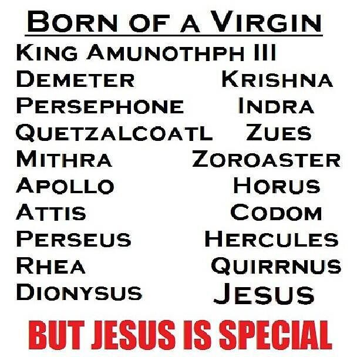

")
(بشکریہ ثاقب افضال)
ایک انسان جو کہ بن باپ کے پیدا ہوا , دنیا نے اسے خدا کا بیٹا کہا ,اس کے 12 ساتھی تھے. وہ انسان نوجوانی میں صلیب پر چڑھا دیا گیا .
یہ انسان کون ہے !!!! بظاہر یہ لگتا ہے جیسے یہ عیسی کا ذکر ہورہا ہے ,لیکن یہاں اس انسان سے مراد مصر کا ہورس (Horus ) نامی وہ شخص ہے جس کی زندگی عیسی کے بارے میں بنائی گئی کہانی سے بڑی مطابقت رکھتی ہے .
مروجہ بائیو گرافیز کے مطابق دونوں کی پیدائش کنواری عورت سے ہوئی, دونوں کی پیدائش کے وقت آسمان پر ایک ستارہ نمودار ہوا , دونوں نے سات لوگوں کے ساتھ کشتی کی سواری کی , دونوں کے ساتھ بارہ حواری تھے. عیسی کو کرائسٹ کہا جاتا ہے تو ہورس کو کرسٹ (Krst) کہا جاتا ہے.ہورس کی ماں Isis بھی مریم کی طرح کنواری تھی .
ایسی ہی کہانی عیسی کی پیدائش سے 1200 سال قبل ورشنا دیوتا کی بھی ہے . وہ بھی ہولی سپرٹ کے چھونے سے کنواری ماں کے ہاں پیدا ہوا , اسے بھی پوری دنیا کا نجات دھندہ اور مسیحا کہا گیا. ورشنا دیوتا نے بھی معجزے دکھاے , اندھوں کو بینا اور مردوں کو زندہ کیا . اسے بھی دو چوروں کے درمیان مصلوب کیا گیا , مگر وہ پھر سے جی اٹھا اور آسمان کی طرف روانہ ہوگیا .حیرت انگیز طور پر ورشا دیوتا کی تاریخ پیدائش بھی 25 دسمبر تھی.
اسی طرح یونان میں متھرا (Mithra) کو بھی یونانی تاریخ میں نجات دہندہ کا مقام حاصل ہے. متھرا دیوتا بھی 25 دسمبر کو پیدا ہوتا ہے. اس کی پیدائش پر فرشتے تحفے تحائف پیش کرتے ہیں . اسی بھی خدا کا بیٹا اور مسیحا قرار دیا گیا .اسکے حواریوں نے بھی اکھٹے کھانا کھایا ,روٹی کو متھرا کا گوشت اور مشروب کو اسکا خون قرار دیا گیا . وہ بھی لوگوں کے گناہ بخشوانے کے لئے مصلوب ہوا اور دوبارہ زندہ بھی ہوگیا اور ہورس اور ورشنا دیوتا کی طرح اس کے مصلوب اور دوبارہ جی اٹھنے کی تاریخ 25 دسمبر اور 25 مارچ ہی ہے .
ماضی کا شاید ہی کوئی ایسا مذہب اور معاشرہ ایسا ہو کہ جس میں کوئی مسیح یا مہدی نہ پایا جاتا ہو . عیسی کے حالات زندگی سے ملتی جلتی درجنوں کہانیاں تاریخ سے حاصل کی جاسکتی ہیں.
کیا یہ ممکن ہے کہ ایک ہی واقعہ مختلف زمانوں میں ایک ہی طرح بار بار دہرایا گیا ہو? تمام کردار ایک جیسے ہوں? مرکزی کردار کی تاریخ پیدائش ,موت اور زندہ ہونے کی تاریخ تک ایک ہوسکتی ہے? یقینا نہیں !!
حقیقت یہی ہے کہ یہ کوئی واقعہ نہیں بلکہ محض ایک کہانی ہے .
تمام تر حوالہ جات اور تفصیلات کے لیے یہ انگریزی آرٹیکل پڑھئے (لنک)۔
اور وکیپیڈیا پر موجود یہ آرٹیکل بھی جو کہ ہر کتاب کا باقاعدہ ریفرنس دے کر بات کر رہا ہے (لنک)
